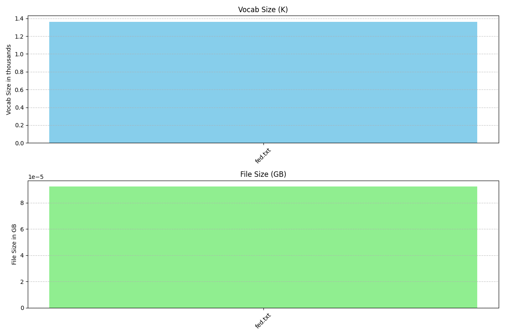

Welcome to the 🛸 docs

Packages & useful classes
tractor_beam
tractor_beam
high-efficiency text & file scraper with smart tracking
🧬 Installation
pip install llm-tractor-beam
or
python3 setup.py install
⚡️ usage
🛸 check .json configs!
Single File
from tractor_beam import beam
auto = tractor_beam.tractor_beam('./config.json')
run = auto.go()
print(run)
auto.destroy('example')
🌊 SUCCESS: config set from - ./example.json
ℹ️ INFO: config saved to - /Users/dylanmoore/VSCode/LLM/tractor-beam.git/example
🌊 SUCCESS: unboxed! 🛸📦 - /Users/dylanmoore/VSCode/LLM/tractor-beam.git/example
☕️ WAIT: tractor beaming with "example"
ℹ️ INFO: Abduct initialized
ℹ️ INFO: Records initialized
ℹ️ INFO: Focus initialized
ℹ️ INFO: written - /Users/dylanmoore/VSCode/LLM/tractor-beam.git/example/fomchistorical2017.htm
[{'file': 'https://www.federalreserve.gov/monetarypolicy/fomchistorical2017.htm', 'path': '/Users/dylanmoore/VSCode/LLM/tractor-beam.git/example/fomchistorical2017.htm'}]
☕️ WAIT: setting header with `.keys()`
🌊 SUCCESS: headers detected as ['file', 'path'] from `.keys()`
ℹ️ INFO: created /Users/dylanmoore/VSCode/LLM/tractor-beam.git/example/receipts.csv
ℹ️ INFO: timestamped - 2023-09-05 06:36:57.003699
🌊 SUCCESS: 1 written to /Users/dylanmoore/VSCode/LLM/tractor-beam.git/example/receipts.csv
ℹ️ INFO: written - /Users/dylanmoore/VSCode/LLM/tractor-beam.git/example/fomchistorical2017_cleaned.txt
🌊 SUCCESS: 🛸 done
{'config': <tractor_beam.config.Config object at 0x10fde00d0>, 'copier': <tractor_beam.clone.replicator.Abduct object at 0x10e588d50>, 'receipts': <tractor_beam.visits.sites.Records object at 0x10fddb0d0>, 'janitor': <tractor_beam.janitor.Focus object at 0x106c6af90>, 'data': [{'file': 'https://www.federalreserve.gov/monetarypolicy/fomchistorical2017.htm', 'path': '/Users/dylanmoore/VSCode/LLM/tractor-beam.git/example/fomchistorical2017.htm', 'ts': datetime.datetime(2023, 9, 5, 6, 36, 57, 3699)}], 'status': 'complete'}
🚨 WARN: example destroyed
Recursive/Batch Processing
from tractor_beam import beam
auto = tractor_beam.tractor_beam('./recurse.example.json')
run = auto.go()
print(run)
auto.destroy('recurse_example')
🌊 SUCCESS: config set from - ./recurse.example.json
ℹ️ INFO: config saved to - /Users/dylanmoore/VSCode/LLM/tractor-beam.git/recurse_example
🌊 SUCCESS: unboxed! 🛸📦 - /Users/dylanmoore/VSCode/LLM/tractor-beam.git/recurse_example
☕️ WAIT: tractor beaming with "recurse_example"
ℹ️ INFO: Abduct initialized
ℹ️ INFO: Records initialized
ℹ️ INFO: Focus initialized
☕️ WAIT: processing https://www.federalreserve.gov/monetarypolicy/fomchistorical2017.htm
100%|██████████| 326/326 [00:00<00:00, 196344.50it/s]
ℹ️ INFO: found - https://www.federalreserve.gov/monetarypolicy/beigebook/files/Beigebook_20170118.pdf
ℹ️ INFO: found - https://www.federalreserve.gov/monetarypolicy/files/FOMC20170201tealbooka20170123.pdf
ℹ️ INFO: found - https://www.federalreserve.gov/monetarypolicy/files/FOMC20170201tealbookb20170126.pdf
ℹ️ INFO: found - https://www.federalreserve.gov/monetarypolicy/files/FOMC20170201Agenda.pdf
ℹ️ INFO: found - https://www.federalreserve.gov/monetarypolicy/files/FOMC_LongerRunGoals_201701.pdf
...
ℹ️ INFO: found - https://www.federalreserve.gov/monetarypolicy/files/FOMC20170503tealbookb20170427.pdf
ℹ️ INFO: found - https://www.federalreserve.gov/monetarypolicy/files/FOMC20170503Agenda.pdf
ℹ️ INFO: found - https://www.federalreserve.gov/monetarypolicy/files/fomcminutes20170503.pdf
ℹ️ INFO: found - https://www.federalreserve.gov/monetarypolicy/files/FOMC20170503meeting.pdf
ℹ️ INFO: found - https://www.federalreserve.gov/monetarypolicy/files/FOMC20170503material.pdf
ℹ️ INFO: found - https://www.federalreserve.gov/monetarypolicy/files/BeigeBook_20170531.pdf
...
ℹ️ INFO: timestamped - 2023-09-05 06:41:52.462400
ℹ️ INFO: timestamped - 2023-09-05 06:41:52.462402
🌊 SUCCESS: 65 written to /Users/dylanmoore/VSCode/LLM/tractor-beam.git/recurse_example/receipts.csv
ℹ️ INFO: written - /Users/dylanmoore/VSCode/LLM/tractor-beam.git/recurse_example/Beigebook_20170118_cleaned.txt
Output is truncated. View as a scrollable element or open in a text editor. Adjust cell output settings...
ℹ️ INFO: written - /Users/dylanmoore/VSCode/LLM/tractor-beam.git/recurse_example/FOMC20170201tealbooka20170123_cleaned.txt
ℹ️ INFO: written - /Users/dylanmoore/VSCode/LLM/tractor-beam.git/recurse_example/FOMC20170201tealbookb20170126_cleaned.txt
ℹ️ INFO: written - /Users/dylanmoore/VSCode/LLM/tractor-beam.git/recurse_example/FOMC20170201Agenda_cleaned.txt
ℹ️ INFO: written - /Users/dylanmoore/VSCode/LLM/tractor-beam.git/recurse_example/FOMC_LongerRunGoals_201701_cleaned.txt
ℹ️ INFO: written - /Users/dylanmoore/VSCode/LLM/tractor-beam.git/recurse_example/fomcminutes20170201_cleaned.txt
ℹ️ INFO: written - /Users/dylanmoore/VSCode/LLM/tractor-beam.git/recurse_example/FOMC20170201meeting_cleaned.txt
...
ℹ️ INFO: written - /Users/dylanmoore/VSCode/LLM/tractor-beam.git/recurse_example/FOMC20170503tealbooka20170421_cleaned.txt
ℹ️ INFO: written - /Users/dylanmoore/VSCode/LLM/tractor-beam.git/recurse_example/FOMC20170503tealbookb20170427_cleaned.txt
ℹ️ INFO: written - /Users/dylanmoore/VSCode/LLM/tractor-beam.git/recurse_example/FOMC20170503Agenda_cleaned.txt
ℹ️ INFO: written - /Users/dylanmoore/VSCode/LLM/tractor-beam.git/recurse_example/fomcminutes20170503_cleaned.txt
ℹ️ INFO: written - /Users/dylanmoore/VSCode/LLM/tractor-beam.git/recurse_example/FOMC20170503meeting_cleaned.txt
ℹ️ INFO: written - /Users/dylanmoore/VSCode/LLM/tractor-beam.git/recurse_example/FOMC20170503material_cleaned.txt
ℹ️ INFO: written - /Users/dylanmoore/VSCode/LLM/tractor-beam.git/recurse_example/BeigeBook_20170531_cleaned.txt
ℹ️ INFO: written - /Users/dylanmoore/VSCode/LLM/tractor-beam.git/recurse_example/FOMC20170614tealbooka20170605_cleaned.txt
...
ℹ️ INFO: written - /Users/dylanmoore/VSCode/LLM/tractor-beam.git/recurse_example/FOMC20171213material_cleaned.txt
🌊 SUCCESS: 🛸 done
{'config': <tractor_beam.config.Config object at 0x105301a10>, 'copier': <tractor_beam.clone.replicator.Abduct object at 0x1041c3390>, 'receipts': <tractor_beam.visits.sites.Records object at 0x106792690>, 'janitor': <tractor_beam.janitor.Focus object at 0x106792c90>, 'data': [{'file': 'https://www.federalreserve.gov/monetarypolicy/beigebook/files/Beigebook_20170118.pdf'...
🚨 WARN: recurse_example destroyed
single file & receipt creation, then deletion
from tractor_beam.clone.replicator import Abduct
from tractor_beam.visits.sites import Records
data = []
copy = Abduct(url='https://www.federalreserve.gov/monetarypolicy/fomchistorical2017.htm')
if copy.download('./fed.txt'):
data.append({"file":copy.url, "path":f'{copy.path}'})
receipts = Records(path='./fed.csv', data=data)
receipts.create(True)
receipts.write(False)
copy.destroy(confirm=copy.path.split('/')[-1])
receipts.destroy(confirm=receipts.path.split('/')[-1])
ℹ️ INFO: written - ./fed.txt
☕️ WAIT: no header set - attempting `.keys()`
🌊 SUCCESS: headers detected as ['file', 'path'] from `.keys()`
ℹ️ INFO: [file, path, ts] header used
ℹ️ INFO: created ./fed.csv
ℹ️ INFO: timestamped - 2023-08-31 17:07:19.544208
🌊 SUCCESS: 1 written to ./fed.csv
🚨 WARN: fed.txt destroyed from ./fed.txt
🚨 WARN: fed.csv destroyed from ./fed.csv
seek through receipts
integer = receipts.seek(line=0)
string = receipts.seek(line='monetarypolicy')
by_date = receipts.seek(line='2023-08-31')
print(integer)
print(string)
print(by_date)
ℹ️ INFO: found monetarypolicy in data
ℹ️ INFO: found 2023-08-31 in data
{'file': 'https://www.federalreserve.gov/monetarypolicy/fomchistorical2017.htm', 'path': './fed.txt', 'ts': '2023-08-31 19:57:02.593086'}
[{'file': 'https://www.federalreserve.gov/monetarypolicy/fomchistorical2017.htm', 'path': './fed.txt', 'ts': '2023-08-31 19:57:02.593086'}]
[{'file': 'https://www.federalreserve.gov/monetarypolicy/fomchistorical2017.htm', 'path': './fed.txt', 'ts': '2023-08-31 19:57:02.593086'}]
recursive mode with three filetypes, and whole directory deletion
from tractor_beam.clone.replicator import Abduct
from tractor_beam.visits.sites import Records
copy = Abduct(url='https://www.federalreserve.gov/monetarypolicy/fomchistorical2017.htm', recurse=True)
data=[]
files = copy.download('./fed', types=['csv','xml','pdf'])[0]
for file in files:
data.append({"file":file, "path":f'{copy.path}/{file.split("/")[-1]}'})
receipts = Records('./fed.csv', data=data)
receipts.create(False)
receipts.write(False)
copy.destroy(confirm=copy.path.split('/')[-1])
receipts.destroy(confirm=receipts.path.split('/')[-1])
☕️ WAIT: processing https://www.federalreserve.gov/monetarypolicy/fomchistorical2017.htm
100%|██████████| 326/326 [00:00<00:00, 154066.83it/s]
ℹ️ INFO: found - https://www.federalreserve.gov/monetarypolicy/beigebook/files/Beigebook_20170118.pdf
ℹ️ INFO: found - https://www.federalreserve.gov/monetarypolicy/files/FOMC20170201tealbooka20170123.pdf
ℹ️ INFO: found - https://www.federalreserve.gov/monetarypolicy/files/FOMC20170201tealbookb20170126.pdf
...
ℹ️ INFO: found - https://www.federalreserve.gov/monetarypolicy/files/FOMC20171213SEPcompilation.pdf
ℹ️ INFO: found - https://www.federalreserve.gov/monetarypolicy/files/FOMC20171213SEPkey.pdf
ℹ️ INFO: found - https://www.federalreserve.gov/monetarypolicy/files/FOMC20171213meeting.pdf
ℹ️ INFO: found - https://www.federalreserve.gov/monetarypolicy/files/FOMC20171213material.pdf
Output is truncated. View as a scrollable element or open in a text editor. Adjust cell output settings...
ℹ️ INFO: written - ./fed/Beigebook_20170118.pdf
ℹ️ INFO: written - ./fed/FOMC20170201tealbooka20170123.pdf
ℹ️ INFO: written - ./fed/FOMC20170201tealbookb20170126.pdf
ℹ️ INFO: written - ./fed/FOMC20170201Agenda.pdf
ℹ️ INFO: written - ./fed/FOMC_LongerRunGoals_201701.pdf
ℹ️ INFO: written - ./fed/fomcminutes20170201.pdf
ℹ️ INFO: written - ./fed/FOMC20170201meeting.pdf
ℹ️ INFO: written - ./fed/FOMC20170201material.pdf
ℹ️ INFO: written - ./fed/Beigebook_20170301.pdf
ℹ️ INFO: written - ./fed/FOMC20170315tealbooka20170303.pdf
ℹ️ INFO: written - ./fed/FOMC20170315tealbookb20170309.pdf
ℹ️ INFO: written - ./fed/FOMC20170315Agenda.pdf
...
ℹ️ INFO: timestamped - 2023-08-31 16:40:37.573578
🌊 SUCCESS: 65 written to ./fed.csv
🚨 WARN: 65 destroyed from ./fed
🚨 WARN: fed.csv destroyed from ./fed.csv
example custom anonymous function
from tractor_beam.supplies import Custom
data = 'linkbase:hello there'
SECSifter = Custom(copy=data)
SECSifter.sift = lambda _: '' if _.startswith('linkbase:') else _
sifted = SECSifter.sift(data)
print(sifted)
rendering markdown handler
data = '<html>hello there</html>'
from tractor_beam.supplies import Strip
clean = Strip(copy=data).sanitize()
print(clean)
xml = '<TITLE>hello there</TITLE>'
clean = Strip(copy=xml).sanitize(xml=True)
print(clean)
hello there
TITLE: hello there
pure text formatter
from tractor_beam.janitor import Focus
worker = Focus(path='./fed.txt', o='./fed_processed.txt')
worker.process()
worker.destroy(confirm=worker.o.split('/')[-1])
ℹ️ INFO: written - ./fed_processed.txt
🚨 WARN: fed_processed.txt destroyed from ./fed_processed.txt
dataset statistics
from tractor_beam.teacher import SP
copy = './fed.txt'
save='./plot.png'
p = SP(copy, save)
p.generate(show=True)
p.destroy(confirm=p.save.split('/')[-1])

SP
🚨 WARN: plot.png destroyed from ./plot.png
🤓 advanced configuration & job planning (many of these will be broken while being retrofitted)
declare existing config from file
from tractor_beam.config import Config
example = Config("./config.json")
conf = example.use()
_l = lambda _: list(_)
print(_l(conf.keys()))
print(conf["settings"]["name"])
conf["settings"]["name"] = 'example'
example.save()
c, conf = (None, None)
c = Config("./config.json")
conf = c.use()
role, name = conf['role'], conf['settings']['name']
print(f'{role}: {name}')
🌊 SUCCESS: config loaded from - ./config.json
['role', 'settings']
fin-tractor_beam
🌊 SUCCESS: config saved to - ./config.json (overwrite)
🌊 SUCCESS: config loaded from - ./config.json
server: example
overrides
example.unbox(True)
example.unbox()
example.destroy()
🌊 SUCCESS: unboxed! 🛸📦 - /Users/dylanmoore/VSCode/LLM/tractor-beam.git/example
☠️ FATAL: exists - /Users/dylanmoore/VSCode/LLM/tractor-beam.git/example
🚨 WARN: example destroyed
initialize from memory i.e. API response
fin_conf = {
"role": "server",
"settings": {
"name": "fin-tractor_beam",
"proj_dir": "/Users/dylanmoore/VSCode/LLM/tractor-beam.git/",
"jobs": [
{
"url": "https://www.federalreserve.gov/monetarypolicy/fomchistorical2017.htm",
"types": [],
"janitor": 0,
"custom": [
{
"func": ""
, "types": [""]
}
]
}
]
}
}
direct_load = Config(fin_conf)
direct_load.use()
direct_load.destroy('fin-tractor_beam')
🌊 SUCCESS: unboxed! 🛸📦 using - /Users/dylanmoore/VSCode/LLM/tractor-beam.git/fin-tractor_beam
🌊 SUCCESS: config loaded from - /Users/dylanmoore/VSCode/LLM/tractor-beam.git/fin-tractor_beam/config.json
🚨 WARN: fin-tractor_beam destroyed
all together now 🎶
# all together now 🎶
from tractor_beam.clone.replicator import Abduct
from tractor_beam.visits.sites import Records
from tractor_beam.config import Config
from tractor_beam.janitor import Focus
import os
fin_conf = {
"role": "server",
"settings": {
"name": "fin-tractor_beam",
"proj_dir": "/Users/dylanmoore/VSCode/LLM/tractor-beam.git/",
"jobs": [
{
"url": "https://www.federalreserve.gov/monetarypolicy/fomchistorical2017.htm",
"types": [],
"janitor": 0,
"custom": [
{
"func": ""
, "types": [""]
}
]
}
]
}
}
direct_load = Config(fin_conf)
c = direct_load.use()
p = os.path.join(c['settings']['proj_dir'], c['settings']['name'])
data = []
for job in c['settings']['jobs']:
copy = Abduct(url=job['url'])
if copy.download(p+'/fed.txt'):
data.append({"file":copy.url, "path":f'{copy.path}'})
receipts = Records(path=p+'/fed.csv', data=data)
receipts.create(True)
receipts.write(False)
worker = Focus(p+'/fed.txt', o=p+'/fed_processed.txt')
worker.process()
🌊 SUCCESS: unboxed! 🛸📦 using - /Users/dylanmoore/VSCode/LLM/tractor-beam.git/fin-tractor_beam
🌊 SUCCESS: config loaded from - /Users/dylanmoore/VSCode/LLM/tractor-beam.git/fin-tractor_beam/config.json
ℹ️ INFO: written - /Users/dylanmoore/VSCode/LLM/tractor-beam.git/fin-tractor_beam/fed.txt
🚨 WARN: path not found
☕️ WAIT: no header set - attempting `.keys()`
🌊 SUCCESS: headers detected as ['file', 'path'] from `.keys()`
ℹ️ INFO: [file, path, ts] header used
ℹ️ INFO: created /Users/dylanmoore/VSCode/LLM/tractor-beam.git/fin-tractor_beam/fed.csv
ℹ️ INFO: timestamped - 2023-09-01 17:28:27.786525
🌊 SUCCESS: 1 written to /Users/dylanmoore/VSCode/LLM/tractor-beam.git/fin-tractor_beam/fed.csv
💣
# that easy
direct_load.destroy('fin-tractor_beam')
🚨 WARN: fin-tractor_beam destroyed
📝 needs
worker/server engineering
- finish
Fax->NATS docs <https://natsbyexample.com>, ``pyclient <https://github.com/nats-io/nats.py>``
good readme
config template / management
optional encryption of config unboxings
tests 😢
move more to
.utilsif / ternary conventions
implement API response option for
Abduct
custom header arg for
Abductadd multiprocessing where needed
put
tqdmin the right places
learn more about how Prismadic uses 🛸
subscribe to our substack